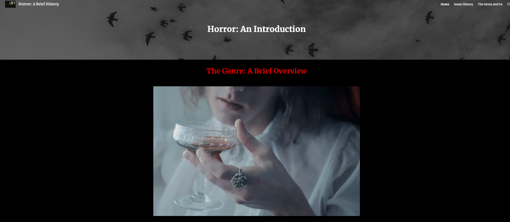
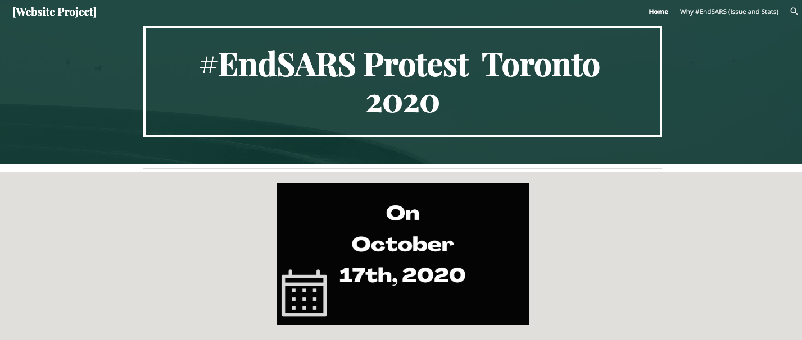

Writing Samples
This is a collection of pieces I've created for university projects and assignments.
Projects
Misinformation in Digital Spaces
A website created using Adobe Spark, discussing the growth of online misinformation.
My Digital Authoring Practices
A website created using Shorthand to show who I am as a digital author.
Caribana: A Digital Exhibit
A Google sites project created to explore the cultural significance of Caribana
Horror: A Brief History
A project that looks at the history of horror media
#EndSARS Protest Toronto 2020
A project that looks at the #EndSARS protest in Toronto
Video and Audio Productions
Sonic Essay
This is a podcast class assignment I created that details my digital authoring process.
My Workflow: Video Essay
A video essay assignment that shows my workflow through the creation of a website.
Scholarly Works
Mock Press Release
Created for an assignment that called for the creation of a mack press release by the Government of Canada concerning a financial aid program during the 2020 COVID-19 pandemic.